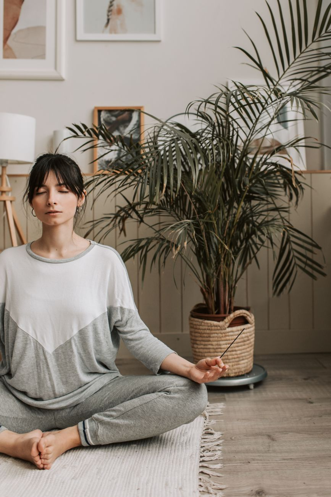
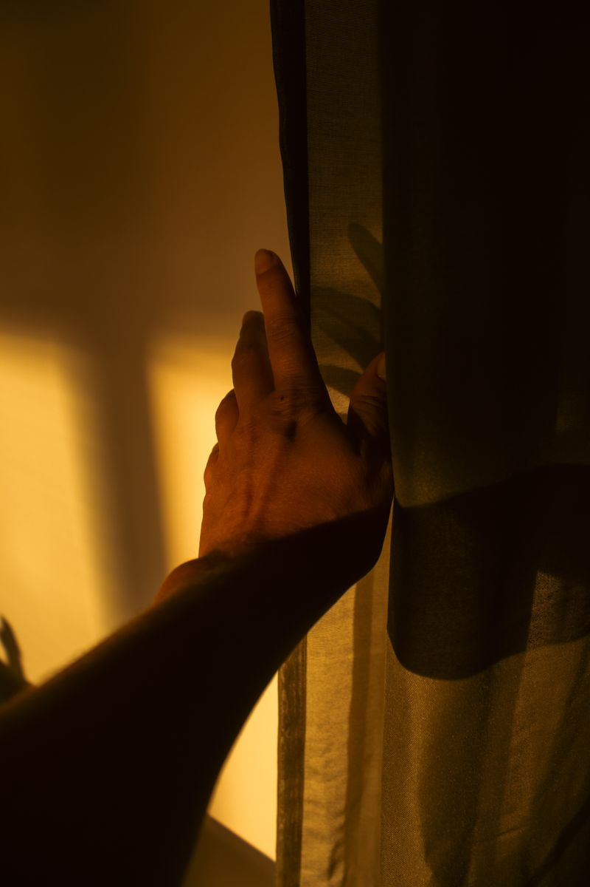

Mintea, corpul și sufletul rareori vorbesc aceeași limbă. Aici încercăm să le traducem unul pe celălalt — un gând, o senzație, o liniște, o dată.
Primește harta, săptămânalNu e o metodă și nu e o promisiune rapidă. E o hartă construită încet, dintr-un fir care leagă trei teritorii — corpul, mintea, sufletul — și din întrebarea simplă: ce se întâmplă când le lași, în sfârșit, să vorbească unul cu celălalt.
Alege de unde vrei să începi astăzi.


Pacea nu se găsește. Se descoperă.
Nu construim liniștea de la zero — ea era deja acolo, sub zgomotul de zi cu zi. Ce numim căutare e, de cele mai multe ori, doar o coborâre înapoi la ce era deja adevărat.
O dată pe săptămână, un gând scurt despre trup, minte și suflet — fără zgomot, fără presiune. Doar liniște, livrată rar.
Mulțumim. Ai fost adăugat pe listă — prima hartă ajunge curând.
Dacă preferi să asculți, nu doar să citești, TheMindfulVoice e vocea acestei hărți — meditații ghidate, în același spirit.